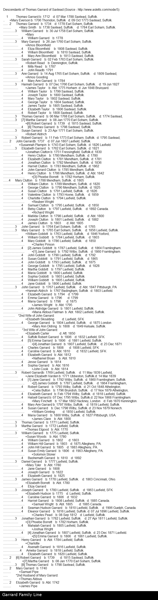

Main Menu
·
Individuals
·
Places
·
Gallery

Attached To
Betsy CLUTTON
b. 1797 d. 1892;
Charlotte CLUTTON
b. 1794;
Elizabeth CLUTTON
b. 1781 d. 1781;
George CLUTTON
b. 1790 d. 1825;
Harriet CLUTTON
b. 1783 d. 1862;
Henry CLUTTON
b. 1780 d. 1780;
Henry CLUTTON
b. 1786 d. About 1842;
James CLUTTON
b. 1803 d. About 1805;
John CLUTTON
b. 1785;
Jonathan CLUTTON
b. 02/06/1751 d. 23/11/1830;
Jonathan CLUTTON
b. 1782 d. 1836;
Joseph CLUTTON
b. 1801 d. 1882;
Mary CLUTTON
b. 1788 d. 1805;
Matilda CLUTTON
b. 1798 d. About 1800;
Samuel CLUTTON
b. 1795 d. 1850;
Susan CLUTTON
b. 31/12/1791 d. 07/1844;
Valentine CLUTTON
b. 1793 d. 1859;
William CLUTTON
b. 1789 d. 1820;
Mary EVERSON
b. 1706 d. 09/10/1773;
Daniel GARRARD
b. 1777;
Elizabeth GARRARD
b. 1762 d. 1821;
Elizabeth GARRARD
b. About 1742;
Henry GARRARD
b. 1784;
James GARRARD
b. 1778 d. 1863;
John GARRARD
b. 1737 d. 06/06/1807 (2);
John GARRARD
b. 1764 d. 1765;
John GARRARD
b. 1767 d. 1847;
Jonathan GARRARD
b. 1782 d. 27/04/1811;
Joseph GARRARD
b. 1780 d. 1863;
Martha GARRARD
b. 1772;
Mary GARRARD
b. 1740;
Mary GARRARD
b. 1765 d. 1856;
Robert GARRARD
b. 1739 d. 1815;
Robert GARRARD
b. 1769 d. 11/05/1839;
Thomas GARRARD
b. 1712 d. 07/03/1788;
Thomas GARRARD
b. 1734 d. 1778;
Thomas GARRARD
b. 1771;
William GARRARD
b. 1775;
Susan PLAMPER
b. 1743 d. 1826
Web page generated using a registered copy of
GedScape
software, licensed by Mark Watkin
Web page generated using a registered copy of GedScape software (www.gedscape.co.uk), licensed to Mark Watkin